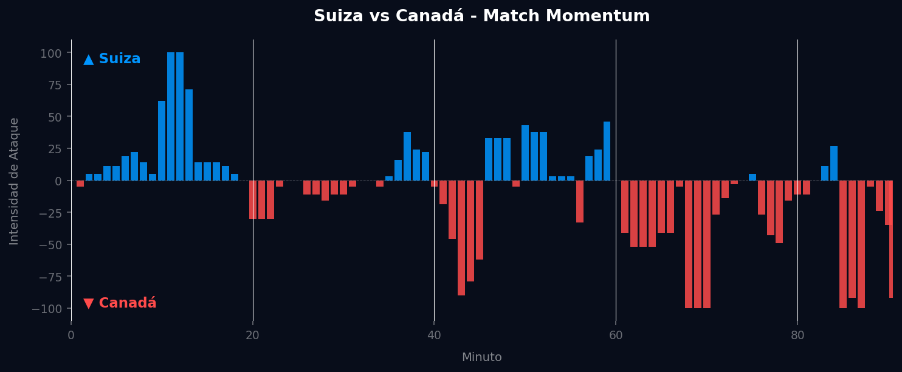
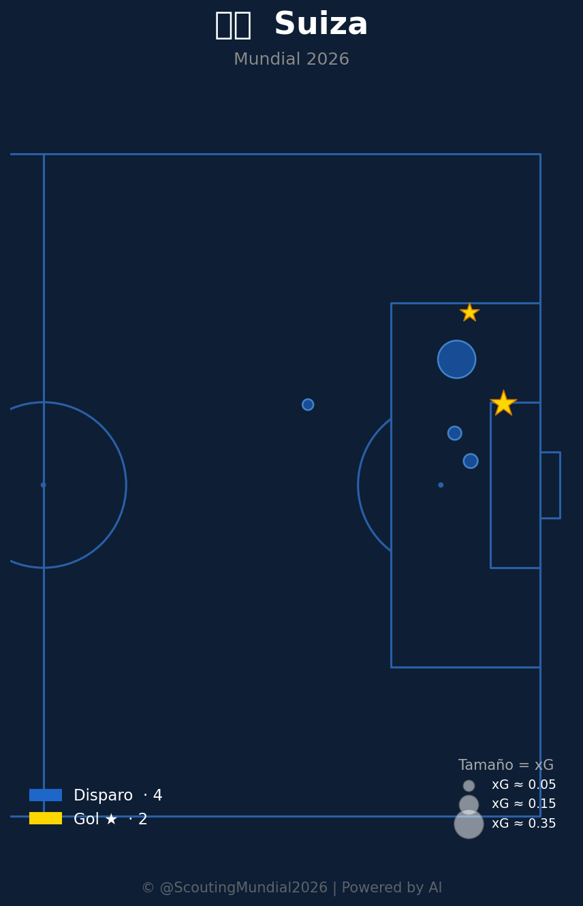
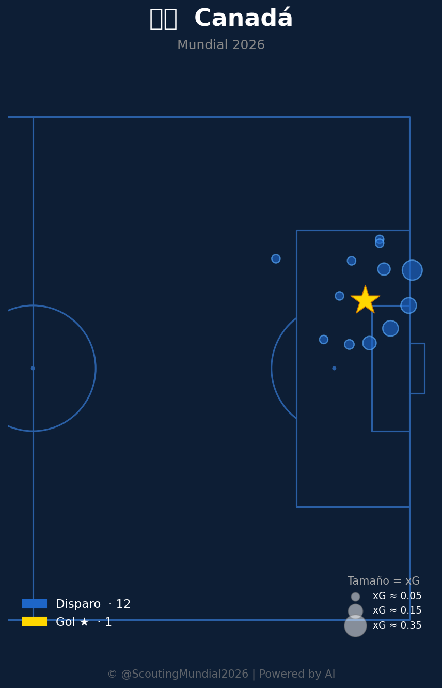

Grupo B
 Canadá
Canadá
Suiza vs Canadá
📅 2026-06-24 · 🕒 19:00 (Local)
Suiza

2 - 1
FINALIZADO
Canadá
📅 2026-06-24 · 🕒 19:00 (Local)
Canadá
El encuentro entre Suiza y Canadá por el Grupo B del Mundial 2026 fue un duelo de contrastes tácticos y momentos clave. Suiza golpeó primero, aprovechando un inicio fulgurante que le permitió abrir el marcador temprano por intermedio de Breel Embolo, quien capitalizó una rápida transición en el minuto 11. Este gol asentó las bases de un partido donde los helvéticos supieron gestionar su ventaja inicial, adoptando una postura más reactiva. Canadá, por su parte, no bajó los brazos y, con Alphonso Davies como su principal referente, comenzó a construir una fase de dominio progresivo, culminando su esfuerzo con el gol del empate anotado por Jonathan David en el minuto 68, fruto de una jugada elaborada que reflejó su insistencia. Sin embargo, cuando el partido parecía inclinarse hacia un empate, la experiencia suiza emergió. Granit Xhaka, desde el mediocampo, orquestó una jugada decisiva que, tras un rebote, fue rematada a la red por Ruben Vargas en los compases finales, sellando una victoria crucial para el conjunto europeo en un partido vibrante y estratégicamente complejo.
El Match Momentum revela la naturaleza pendular del encuentro. Suiza exhibió su pico de intensidad máxima (100.00) en el minuto 11, coincidiendo con su gol inicial, lo que subraya una estrategia de ataque contundente y efectiva en los primeros compases. Esta fase temprana les permitió tomar la iniciativa y gestionar el resto del partido con un enfoque más pragmático. Canadá, por otro lado, demostró una capacidad de reacción notable, dominando la intensidad de ataque el 50.0% del partido, lo que evidencia su persistencia y voluntad ofensiva. Su pico de intensidad máxima (100.00) se registró en el minuto 68, justo cuando lograron el gol del empate, confirmando la correlación entre su empuje y la materialización de una acción ofensiva. A pesar de que Suiza dominó un porcentaje menor (40.2%) en intensidad de ataque, su victoria sugiere una eficiencia superior en la conversión de oportunidades y una solidez defensiva que les permitió resistir los embates canadienses y capitalizar los momentos clave, incluso sin un dominio sostenido del ritmo ofensivo.

El planteamiento táctico de Suiza fue un ejercicio de pragmatismo y disciplina. El equipo de Murat Yakin optó por una estructura 4-2-3-1 que se transformaba en un 4-4-2 compacto en fase defensiva, priorizando la solidez en el mediocampo con la incansable labor de Granit Xhaka y Remo Freuler. Su principal acierto residió en la capacidad para absorber la presión canadiense, cerrando espacios centrales y obligando al rival a buscar las bandas, donde sus defensores mostraron una notable resiliencia. La defensa suiza, aunque sufrió en algunos momentos por la velocidad de Davies, mantuvo una organización casi impecable, limitando las oportunidades claras de Canadá. Su estilo se impuso a través de transiciones rápidas y verticales, aprovechando los espacios generados por el ímpetu canadiense, lo que les permitió ser letales en sus pocas, pero bien ejecutadas, llegadas al área rival, una eficiencia que resultó determinante para la victoria.
Canadá, bajo la dirección de John Herdman, planteó un partido ambicioso con una formación 4-3-3 que buscaba explotar la velocidad de sus extremos, especialmente Alphonso Davies por la izquierda. Sus virtudes fueron evidentes en la fase de construcción de juego y la capacidad para generar oleadas ofensivas, dominando la posesión y buscando constantemente la profundidad. Sin embargo, las fallas defensivas se manifestaron en la vulnerabilidad ante los contragolpes suizos. El bloque canadiense, inicialmente un mediocampo alto con presión sobre la salida rival, se fue estirando a medida que buscaban el empate y luego la victoria, dejando espacios peligrosos a sus espaldas. A pesar de una respuesta enérgica tras el gol inicial suizo y el logro del empate, la falta de contundencia en la finalización de sus múltiples aproximaciones y la desorganización defensiva en momentos puntuales resultaron ser su talón de Aquiles, impidiendo que su superioridad en intensidad se tradujera en un resultado favorable.
El duelo táctico entre los entrenadores fue un claro contraste entre la eficiencia pragmática de Suiza y la ambición ofensiva de Canadá. Murat Yakin optó por una estrategia de contención y golpeo, que, aunque sacrificó la posesión y el dominio territorial, resultó ser letal por su capacidad de capitalizar momentos cruciales. John Herdman, en cambio, apostó por la iniciativa, el volumen de ataque y la presión alta, pero su equipo careció de la contundencia necesaria para transformar su dominio en goles, y mostró fragilidad en defensa ante las transiciones. El veredicto final es que el marcador de 2-1, si bien apretado, es una conclusión justa del partido. Suiza demostró una madurez táctica superior y una ejecución clínica en los momentos clave, castigando los errores del rival y gestionando el partido con inteligencia. Canadá fue valiente y dominante en fases, pero su incapacidad para convertir y su exposición defensiva fueron factores decisivos en su derrota.



